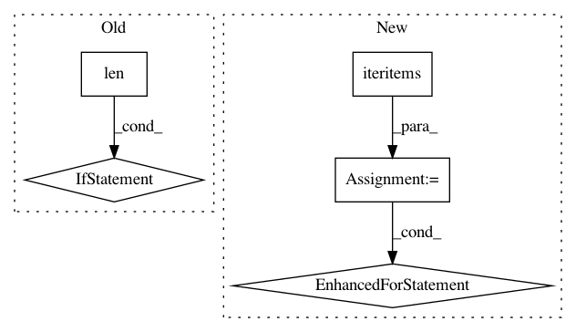

28571e07eeb9de6583fac34828269e6d68b2a438,spynnaker/pyNN/models/neuron/synaptic_manager.py,SynapticManager,_write_synaptic_matrix_and_master_population_table,#SynapticManager#Any#Any#Any#Any#Any#Any#Any#Any#Any#Any#Any#Any#Any#Any#,554
Before Change
// Add a distinct synapse info (determined by
// connector) to the list of synapse info
connector_found = False
for n in range(len(synapse_infos)):
if (synapse_infos[n].connector is connector):
connector_found = True
if not connector_found:
synapse_infos.append(synapse_info)
// Skip blocks that will be written on the machine, but add them
After Change
synapse_infos[app_edge].append(synapse_info)
// Loop over synapse infos as collected above and assign index in order
for app_edge, infos in iteritems(synapse_infos):
for i, info in enumerate(infos):
info.index = i
self.__poptable_type.finish_master_pop_table(
spec, master_pop_table_region)
// Write the size and data of single synapses to the direct region
In pattern: SUPERPATTERN
Frequency: 3
Non-data size: 5
Instances
Project Name: SpiNNakerManchester/sPyNNaker
Commit Name: 28571e07eeb9de6583fac34828269e6d68b2a438
Time: 2019-07-08
Author: Andrew.Rowley@manchester.ac.uk
File Name: spynnaker/pyNN/models/neuron/synaptic_manager.py
Class Name: SynapticManager
Method Name: _write_synaptic_matrix_and_master_population_table
Project Name: pantsbuild/pants
Commit Name: f612f023e0e49c18e8f307a8ba647e02b0fb5cb8
Time: 2015-08-11
Author: fedor.korotkov@gmail.com
File Name: src/python/pants/backend/project_info/tasks/ide_gen.py
Class Name: IdeGen
Method Name: map_external_jars
Project Name: snipsco/snips-nlu
Commit Name: 478deeb62c419a471ef9349e177bcaf3102b9804
Time: 2017-02-24
Author: clement.doumouro@snips.ai
File Name: custom_intent_parser/entity_extractor/regex_entity_extractor.py
Class Name: RegexEntityExtractor
Method Name: fit